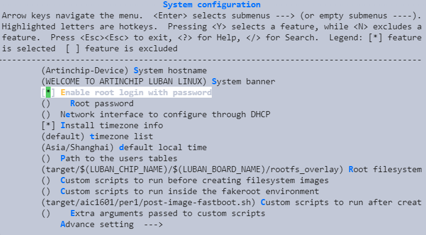
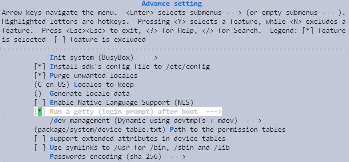

2.10. 设置密码登录¶
Luban SDK 编译的 Linux 系统固件，默认使用 root 登录，并且没有登录密码。
有些产品为了用户数据的安全，需要设置登录密码，可通过下列配置完成。
进入 SDK 配置界面
make menuconfig
进入
System configuration使能
Enable root login with password并且输入初始密码。同时，需要进入
Advance setting使能getty:
注意
这里设置的密码，会被保存到 SDK .config 中。默认情况下，该文件会被安装到
/etc/config/luban.config，因此在设置了密码的情况下，需要注意保护或者删除 /etc/config/luban_sdk.config 文件。
其他相关配置
在
Advance setting下，可以选择密码的 encoding 方式：System configuration ---> Advance setting ---> Passwords encoding (sha-256) --->设置的效果
启动之后，显示需要输入登录的用户名和密码，输入正确才可进行其他操作。
Starting syslogd: OK
Starting klogd: OK
Starting mdev... OK
WELCOME TO ARTINCHIP LUBAN LINUX
ArtInChip-Device login: root
Password:
[aic@~] #